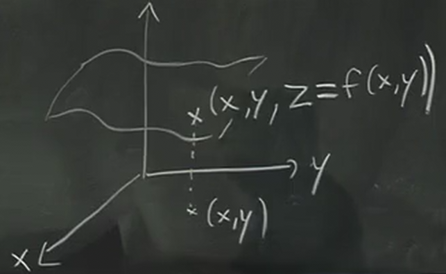
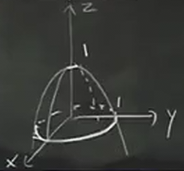
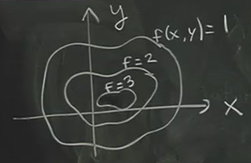

Functions and Partial Derivatives
Table of Contents
1. Functions of Multiple Variables
We have seen and know how to take the derivative of functions of one variable, for example:
\[ f(x) = \sin(x) \]
Functions of 2 variables are simply functions that, when given an input \((x,y)\), we get an output \(f(x,y)\). For example:
\[ f(x,y) = x^2+y^2 \]
Just like functions of one variable, functions fo multiple variables need not be defined at all points: there can be a domain for which inputs the functions is defined. For example, \(f(x,y) = \frac{1}{x+y}\) is only defined if \(x+y \neq 0\).
1.1. Visualizing a Function of Two Variables
First, we can visualize a function of two variables by plotting its graph. We can define a third dimension \(z=f(x,y)\), such that the graph is now a surface in space:

It is often easier to guess what the graph looks like by considering the function in cross-sections of planes. Take for example the function \(f(x,y) = 1-x^2-y^2\). We know that:
- yz-plane: \(z=1-y^2\), downward facing parabola
- xz-plane: \(z=1-x^2\), downward facing parabola
- xy-plane: \(x^2+y^2=1\), unit circle
With this information, we can see the graph will look somewhat like this:

However, notice that it is very difficult to draw three dimensional graphs on a two dimensional surface. To do this, we can use another tool.
1.1.1. Contour Plot
The contour plot is similar to a topographic map: each curve on the contour plot shows the function at a certain constant elevation:

In other words, each contour on the contour plot shows all the points where \(f(x,y)\) is equivalent to some fixed constants, chosen at regular intervals. These contours are also called a level curve of \(f\), because each curve is at a constant "elevation".
2. Partial Derivatives
While the contour plot can tell us qualitatively the rate of change with respect to \(x\) and \(y\), this is also a tool for the derivative. However, for functions of multiple variables, we need to introduce the partial derivative. It is defined like so:
\begin{aligned} f_x &= \frac{\partial f}{\partial x} = \lim_{\Delta x \to 0} \frac{f(x_0 + \Delta x, y_0) - f(x_0,y_0)}{\Delta x} \\ f_x &= \frac{\partial f}{\partial y} = \lim_{\Delta y \to 0} \frac{f(x_0, y_0 + \Delta y) - f(x_0,y_0)}{\Delta y} \end{aligned}Just like how for one variable, the derivative is the slope of the tangent line to the function, for two variables, it is the same. The partial derivative with respect to x is simply the slope of the tangent line when y is held constant (\(y=y_0\)), and vice versa.
To compute the partial derivative, we treat the other variable as a constant and then proceed with the normal derivative. For example:
\begin{aligned} f(x,y) &= x^3y + y^2 \\ f_x &= 3x^2y \\ f_y &= x^3 + 2y \end{aligned}2.1. Non-Independent Variables
Sometimes, we want to take the partial derivative of a function \(f(x,y,z)\) such that we have the constraint \(g(x,y,z)=c\).
It follows then that we can write a function for a variable in terms of the other variable — for example, \(z=z(x,y)\). The question is then how do we find partial derivatives like \(\frac{\partial z}{\partial x}\) and \(\frac{\partial z}{\partial y}\) without necessarily having to solve for \(z\)?
Taking the total differential of \(g\), we get that:
\[ \text{d}g = g_x \text{d}x + g_y \text{d}y + g_z \text{d}z \]
Yet, since \(g\) is equal to a constant, we know that \(\text{d}g=0\). Therefore, we can write:
\[ g_x \text{d}x + g_y \text{d}y + g_z \text{d}z = 0 \]
This now gives us a relationship between all of the variables. If for example we view \(z=z(x,y)\), we can figure out the relationship for \(\text{d}z\) by isolating it from the total differential above:
\[ \text{d}z = -\frac{g_x}{g_z}\text{d}x - \frac{g_y}{g_z}\text{d}y \]
Therefore, we get that:
\begin{aligned} \frac{\partial z}{\partial x} = -\frac{g_x}{g_z} \\ \frac{\partial z}{\partial y} = -\frac{g_y}{g_z} \end{aligned}We can go a step further and find things like \(f_y\) with \(x\) held constant by considering the total differential of \(f\). Then, since \(\text{d}x=0\), we can plug in what we found for \(\text{d}z\) to get a total differential that only has \(\text{d}y\).
2.1.1. A Note on Notation
Consider the function \(f(x,y)=x+y\). Then, apply the change of variables \(x=u\), \(y=u+v\). Since \(f=x+y\) now becomes \(f=2u+v\), we know that these two things are true:
\begin{aligned} \frac{\partial f}{\partial x} = 1 \\ \frac{\partial f}{\partial u} = 2 \end{aligned}This offers up a possible contradiction: we know that \(x=u\), yet \(f_x \neq f_u\)!
The key thing to realize is that there is hidden information that our notation for partial derivatives is ignoring. For \(f_x\), we are changing \(x\) while keeping \(y\) constant, and for \(f_u\), we are changing \(u\) while keeping \(v\) constant. Therefore, for situations like these, we need clearer notation that specifies what it is we are keeping constant:
\begin{aligned} \frac{\partial f}{\partial x} = \left ( \frac{\partial f}{\partial x} \right )_y \\ \frac{\partial f}{\partial u} = \left ( \frac{\partial f}{\partial u} \right )_v \end{aligned}